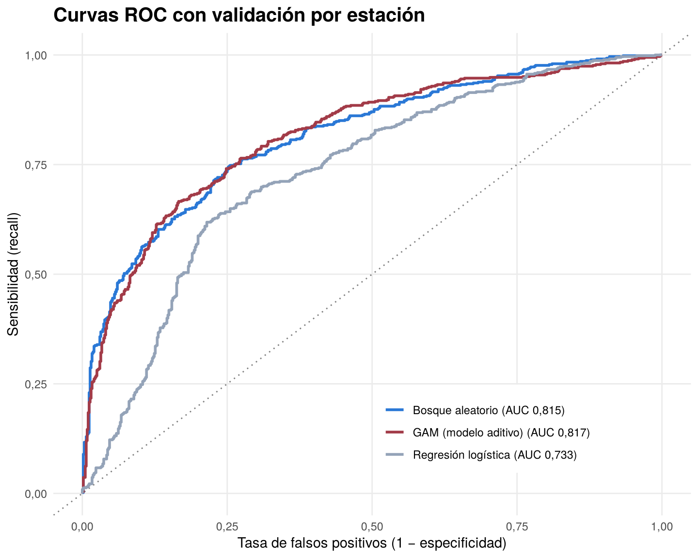
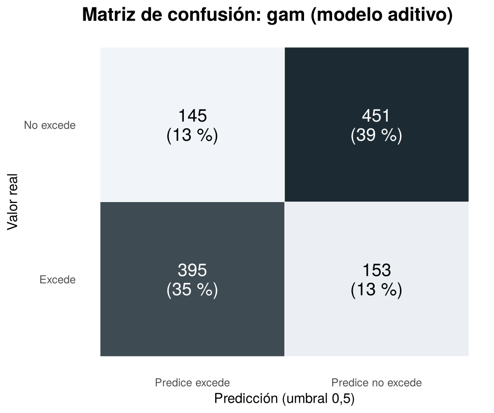
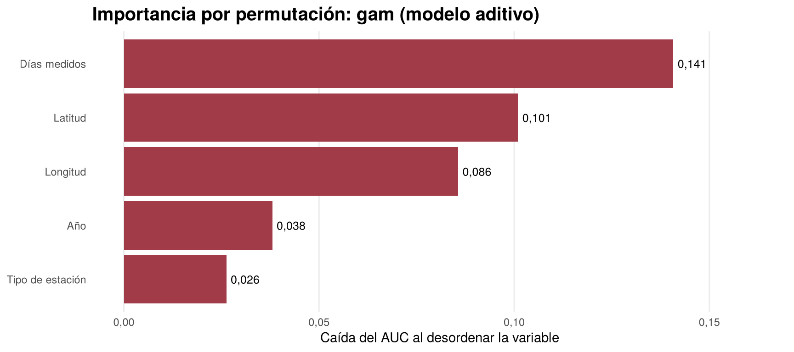
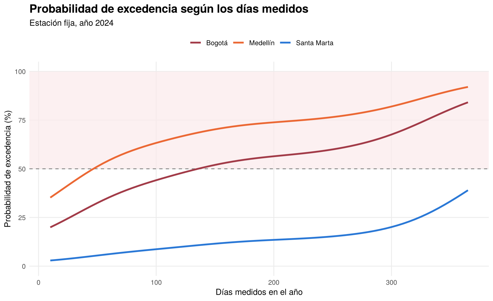

Capítulo 3 Modelo de predicción
En este capítulo se entrena el modelo que predice si una estación tendrá en el año al menos un día con PM2.5 por encima del límite diario de la Resolución 2254 de 2017. Se usan los registros de 24 horas y los predictores que salieron del análisis exploratorio. El mismo modelo está integrado en la aplicación en Shiny y en el dashboard en Dash.
3.1 Preparación de los datos
library(ranger)
library(mgcv)
d_mod <- pm25_24h %>%
filter(`Tipo de Estación` %in% c("Fija", "Indicativa")) %>%
transmute(Estacion = Estación, Municipio = Municipio_norm, Latitud, Longitud,
Fija = as.integer(`Tipo de Estación` == "Fija"), Dias = `No. de datos`, Anio = Año, Excede)
tabla(data.frame(Registros = nrow(d_mod), Estaciones = n_distinct(d_mod$Estacion), Exceden = sum(d_mod$Excede),
Porcentaje = mean(d_mod$Excede) * 100),
c("Registros", "Estaciones", "Exceden", "Porcentaje que excede (%)"), dec = 1)| Registros | Estaciones | Exceden | Porcentaje que excede (%) |
|---|---|---|---|
| 1.144 | 383 | 548 | 47,9 |
El conjunto de entrenamiento tiene 1.144 registros de 383 estaciones y el 47,9 % excede el límite. Las dos clases tienen casi el mismo tamaño, así que no hace falta balancearlas.
Predictores
| Predictor | Descripción | Por qué entra |
|---|---|---|
| Latitud y longitud | Ubicación de la estación | Las ciudades andinas exceden mucho más que el Caribe |
| Fija | 1 si la estación es fija, 0 si es indicativa | Las fijas exceden mucho más que las indicativas |
| Dias | Días medidos en el año (No. de datos) |
Entre más días se mide, más fácil es captar un día malo |
| Anio | 2011 a 2024 | Recoge el cambio de límite de 2018 y los cambios de la red |
No entran el promedio, la mediana, el percentil 98, el máximo ni los días de excedencia del PM2.5, porque se calculan con las mismas mediciones que definen la variable objetivo (fuga de información).
3.2 Validación por estación
Una misma estación aparece en varios años. Si las filas se dividen al azar, la misma estación queda en entrenamiento y en prueba, y el modelo parece mejor de lo que es. Por eso las estaciones se reparten en 5 grupos y cada estación queda completa en un solo grupo. Se comparan tres modelos: regresión logística (glm), bosque aleatorio (ranger) y un modelo aditivo generalizado (GAM, con mgcv), que permite relaciones curvas y una superficie suave para la ubicación.
MODELOS <- list(
"Regresión logística" = function(tr) {
m <- glm(Excede ~ Latitud + Longitud + Fija + Dias + Anio, data = tr, family = binomial)
function(nd) as.numeric(predict(m, nd, type = "response"))
},
"Bosque aleatorio" = function(tr) {
m <- ranger(factor(Excede) ~ Latitud + Longitud + Fija + Dias + Anio, data = tr, num.trees = 500,
min.node.size = 5, probability = TRUE, seed = 42)
function(nd) predict(m, nd)$predictions[, "1"]
},
"GAM (modelo aditivo)" = function(tr) {
m <- gam(Excede ~ s(Latitud, Longitud, k = 30) + Fija + s(Dias, k = 8) + s(Anio, k = 6),
data = tr, family = binomial, method = "REML")
function(nd) as.numeric(predict(m, nd, type = "response"))
}
)
auc_valor <- function(y, p) {
r <- rank(p); n1 <- sum(y == 1); n0 <- sum(y == 0)
(sum(r[y == 1]) - n1 * (n1 + 1) / 2) / (n1 * n0)
}
metricas <- function(y, p) {
pr <- as.integer(p >= 0.5)
vp <- sum(pr == 1 & y == 1); vn <- sum(pr == 0 & y == 0); fp <- sum(pr == 1 & y == 0); fn <- sum(pr == 0 & y == 1)
n <- length(y); po <- (vp + vn) / n; pe <- ((vp + fp) * (vp + fn) + (fn + vn) * (fp + vn)) / n^2
list(auc = auc_valor(y, p), exactitud = po, precision = vp / (vp + fp), recall = vp / (vp + fn),
especificidad = vn / (vn + fp), f1 = 2 * vp / (2 * vp + fp + fn), kappa = (po - pe) / (1 - pe),
matriz = c(vn = vn, fp = fp, fn = fn, vp = vp))
}
set.seed(42)
estaciones <- unique(d_mod$Estacion)
d_mod$Grupo <- setNames(sample(rep(1:5, length.out = length(estaciones))), estaciones)[d_mod$Estacion]
prob_cv <- list(); filas <- list()
for (nombre in names(MODELOS)) {
p <- numeric(nrow(d_mod)); auc_g <- c()
for (k in 1:5) {
f <- MODELOS[[nombre]](d_mod[d_mod$Grupo != k, ])
p[d_mod$Grupo == k] <- f(d_mod[d_mod$Grupo == k, ])
auc_g <- c(auc_g, auc_valor(d_mod$Excede[d_mod$Grupo == k], p[d_mod$Grupo == k]))
}
prob_cv[[nombre]] <- p
m <- metricas(d_mod$Excede, p)
filas[[nombre]] <- data.frame(Modelo = nombre, AUC = m$auc, AUC_media = mean(auc_g), Desv = sd(auc_g),
Exactitud = m$exactitud, Precision = m$precision, Recall = m$recall, F1 = m$f1)
}
res_mod <- bind_rows(filas) %>% arrange(desc(AUC))
tabla(res_mod, c("Modelo", "AUC", "AUC media por grupo", "Desv. por grupo", "Exactitud", "Precisión", "Recall", "F1"),
dec = 3)| Modelo | AUC | AUC media por grupo | Desv. por grupo | Exactitud | Precisión | Recall | F1 |
|---|---|---|---|---|---|---|---|
| GAM (modelo aditivo) | 0,817 | 0,814 | 0,029 | 0,740 | 0,731 | 0,721 | 0,726 |
| Bosque aleatorio | 0,815 | 0,816 | 0,018 | 0,740 | 0,743 | 0,697 | 0,719 |
| Regresión logística | 0,733 | 0,739 | 0,032 | 0,684 | 0,658 | 0,710 | 0,683 |
GAM (modelo aditivo) tiene el mejor AUC (0,817), seguido muy de cerca por bosque aleatorio (0,815). La regresión logística queda bastante atrás (0,733) porque solo puede trazar fronteras lineales, y la relación con la ubicación no es lineal: el riesgo sube en el centro andino y baja hacia el norte y el sur.
Con el mejor modelo se acierta en 74 de cada 100 registros (exactitud de 0,740) y se detecta el 72 % de los que sí exceden (recall de 0,721). La desviación entre grupos es baja (0,029), así que el resultado no depende de qué estaciones quedaron en cada grupo.
curva_roc <- function(y, p) {
u <- sort(unique(c(Inf, p)), decreasing = TRUE)
data.frame(fpr = sapply(u, function(x) mean(p[y == 0] >= x)), tpr = sapply(u, function(x) mean(p[y == 1] >= x)))
}
roc_df <- bind_rows(lapply(names(prob_cv), function(n)
curva_roc(d_mod$Excede, prob_cv[[n]]) %>%
mutate(Modelo = paste0(n, " (AUC ", fmt(auc_valor(d_mod$Excede, prob_cv[[n]]), 3), ")"))))
ggplot(roc_df, aes(fpr, tpr, color = Modelo)) +
geom_abline(linetype = "dotted", color = "grey50") +
geom_step(linewidth = 1) +
scale_color_manual(values = c("#2a78d6", "#a23b48", "#94a3b8")) +
labs(title = "Curvas ROC con validación por estación", x = "Tasa de falsos positivos (1 − especificidad)",
y = "Sensibilidad (recall)", color = NULL) +
tema + theme(legend.position = c(0.68, 0.18), legend.background = element_rect(fill = "white", color = NA))
Las curvas del bosque aleatorio y del GAM casi se superponen y están por encima de la regresión logística. Las tres quedan lejos de la diagonal, que sería un modelo que adivina al azar.
mejor <- res_mod$Modelo[1]
m_mejor <- metricas(d_mod$Excede, prob_cv[[mejor]])
mc <- data.frame(Real = factor(c("No excede", "No excede", "Excede", "Excede"), levels = c("Excede", "No excede")),
Prediccion = c("Predice no excede", "Predice excede", "Predice no excede", "Predice excede"),
n = as.numeric(m_mejor$matriz[c("vn", "fp", "fn", "vp")]))
ggplot(mc, aes(Prediccion, Real, fill = n)) +
geom_tile(color = "white") +
geom_text(aes(label = paste0(n, "\n(", round(n / sum(n) * 100), " %)"), color = n > max(n) / 2), size = 5, lineheight = 0.9) +
scale_fill_gradient(low = "#f1f5f9", high = "#1c2b33") + scale_color_manual(values = c("black", "white")) +
labs(title = paste("Matriz de confusión:", tolower(mejor)), x = "Predicción (umbral 0,5)", y = "Valor real") +
tema + theme(legend.position = "none", panel.grid = element_blank())
De los 1.144 registros, el modelo clasifica bien 846: 451 que no exceden y 395 que sí. Se equivoca en 145 falsas alarmas (predice excedencia y no la hubo) y en 153 excedencias que no detecta. Los errores están repartidos, así que el modelo no está sesgado hacia una sola clase.
3.3 Importancia de los predictores
set.seed(42)
predictores <- c(Latitud = "Latitud", Longitud = "Longitud", Fija = "Tipo de estación", Dias = "Días medidos", Anio = "Año")
imp <- sapply(names(predictores), function(v) mean(sapply(1:5, function(k) {
te <- d_mod[d_mod$Grupo == k, ]
f <- MODELOS[[mejor]](d_mod[d_mod$Grupo != k, ])
base <- auc_valor(te$Excede, f(te))
mean(replicate(5, { tp <- te; tp[[v]] <- sample(tp[[v]]); base - auc_valor(te$Excede, f(tp)) }))
})))
imp_df <- data.frame(Predictor = predictores[names(imp)], Caida = imp) %>% arrange(Caida)
ggplot(imp_df, aes(x = reorder(Predictor, Caida), y = Caida)) +
geom_col(fill = "#a23b48") +
geom_text(aes(label = fmt(Caida, 3)), hjust = -0.15, size = 3.3) +
coord_flip() + expand_limits(y = max(imp_df$Caida) * 1.15) +
labs(title = paste("Importancia por permutación:", tolower(mejor)), x = NULL,
y = "Caída del AUC al desordenar la variable") +
tema + theme(panel.grid.major.y = element_blank())
Los días medidos son el predictor que más pesa: si se desordenan, el AUC baja 0,141. Después vienen la latitud (0,101), la longitud (0,086) y el año (0,038). El tipo de estación aporta poco (0,026) porque su efecto ya está recogido en los días medidos, ya que las estaciones fijas son las que miden todo el año.
3.4 Entrenamiento con división en entrenamiento y prueba
Esta es la forma en que se entrena el modelo en la aplicación y en el dashboard: se elige un porcentaje de estaciones para entrenar (aquí 80 %) y el resto se usa para probar. La división también se hace por estación.
set.seed(42)
est_tr <- sample(estaciones, round(length(estaciones) * 0.8))
entrenamiento <- d_mod[d_mod$Estacion %in% est_tr, ]
prueba_df <- d_mod[!d_mod$Estacion %in% est_tr, ]
f_mejor <- MODELOS[[mejor]](entrenamiento)
prueba <- metricas(prueba_df$Excede, f_mejor(prueba_df))
tabla(data.frame(Entrenamiento = length(est_tr), Prueba = length(estaciones) - length(est_tr), AUC = prueba$auc,
Exactitud = prueba$exactitud, Kappa = prueba$kappa, Sensibilidad = prueba$recall,
Especificidad = prueba$especificidad, F1 = prueba$f1),
c("Estaciones de entrenamiento", "Estaciones de prueba", "AUC", "Exactitud", "Kappa", "Sensibilidad",
"Especificidad", "F1"), dec = 3)| Estaciones de entrenamiento | Estaciones de prueba | AUC | Exactitud | Kappa | Sensibilidad | Especificidad | F1 |
|---|---|---|---|---|---|---|---|
| 306 | 77 | 0,796 | 0,715 | 0,423 | 0,646 | 0,774 | 0,677 |
Con 306 estaciones para entrenar y 77 para probar, el AUC en prueba es 0,796, parecido al de la validación cruzada. El kappa de 0,42 indica un acuerdo moderado más allá del azar. La especificidad (0,77) y la sensibilidad (0,65) muestran cómo le va al modelo con las estaciones que no exceden y con las que sí.
3.5 Serialización del modelo
Para usar el modelo en la aplicación sin volver a entrenarlo cada vez, se entrena con todos los datos y se guarda con saveRDS(). La aplicación lo carga con readRDS() al iniciar.
modelo_todos <- gam(Excede ~ s(Latitud, Longitud, k = 30) + Fija + s(Dias, k = 8) + s(Anio, k = 6),
data = d_mod, family = binomial, method = "REML")
archivo <- file.path(tempdir(), "modelo_pm25.rds")
saveRDS(modelo_todos, archivo)
modelo_cargado <- readRDS(archivo)
cat("Modelo guardado y cargado:", class(modelo_cargado)[1])## Modelo guardado y cargado: gam3.6 Ejemplos de predicción
caso <- function(municipio, nombre, fija, dias, anio) {
m <- d_mod[d_mod$Municipio == municipio, ]
data.frame(Municipio = nombre, Tipo = ifelse(fija == 1, "Fija", "Indicativa"), Dias = dias, Anio = anio,
Latitud = mean(m$Latitud), Longitud = mean(m$Longitud), Fija = fija)
}
casos <- bind_rows(caso("BOGOTA, D.C.", "Bogotá", 1, 330, 2024), caso("MEDELLIN", "Medellín", 1, 300, 2024),
caso("CALI", "Cali", 1, 300, 2024), caso("SANTA MARTA", "Santa Marta", 1, 300, 2024),
caso("MONTERIA", "Montería", 0, 60, 2024), caso("BOGOTA, D.C.", "Bogotá", 0, 60, 2024))
casos$Probabilidad <- as.numeric(predict(modelo_cargado, casos, type = "response")) * 100
casos$Prediccion <- ifelse(casos$Probabilidad >= 50, "Excede", "No excede")
tabla(casos %>% select(Municipio, Tipo, Dias, Anio, Probabilidad, Prediccion),
c("Municipio", "Tipo", "Días medidos", "Año", "Probabilidad (%)", "Predicción"), dec = 0)| Municipio | Tipo | Días medidos | Año | Probabilidad (%) | Predicción |
|---|---|---|---|---|---|
| Bogotá | Fija | 330 | 2.024 | 75 | Excede |
| Medellín | Fija | 300 | 2.024 | 82 | Excede |
| Cali | Fija | 300 | 2.024 | 43 | No excede |
| Santa Marta | Fija | 300 | 2.024 | 20 | No excede |
| Montería | Indicativa | 60 | 2.024 | 4 | No excede |
| Bogotá | Indicativa | 60 | 2.024 | 13 | No excede |
Con las mismas condiciones (estación fija, unos 300 días medidos, 2024), la probabilidad cambia mucho según el lugar: Bogotá (75 %) y Medellín (82 %) frente a Cali (43 %) y Santa Marta (20 %). Una estación indicativa que mide solo 60 días tiene menor probabilidad aunque esté en Bogotá (13 %), porque tiene pocos días para registrar una excedencia.
curvas <- bind_rows(lapply(list(c("BOGOTA, D.C.", "Bogotá"), c("MEDELLIN", "Medellín"), c("SANTA MARTA", "Santa Marta")),
function(x) {
base <- caso(x[1], x[2], 1, 0, 2024)
nd <- data.frame(Latitud = base$Latitud, Longitud = base$Longitud, Fija = 1, Dias = seq(10, 365, 5), Anio = 2024)
nd$Probabilidad <- as.numeric(predict(modelo_cargado, nd, type = "response")) * 100
nd$Municipio <- x[2]
nd
}))
ggplot(curvas, aes(Dias, Probabilidad, color = Municipio)) +
annotate("rect", xmin = -Inf, xmax = Inf, ymin = 50, ymax = 100, fill = "#fbe9eb", alpha = 0.7) +
geom_hline(yintercept = 50, linetype = "dashed", color = "grey50") +
geom_line(linewidth = 1.1) +
scale_color_manual(values = c("Bogotá" = "#a23b48", "Medellín" = "#eb6834", "Santa Marta" = "#2a78d6")) +
coord_cartesian(ylim = c(0, 100)) +
labs(title = "Probabilidad de excedencia según los días medidos", subtitle = "Estación fija, año 2024",
x = "Días medidos en el año", y = "Probabilidad de excedencia (%)", color = NULL) +
tema + theme(legend.position = "top")
En los tres municipios la probabilidad sube con los días medidos. Medellín y Bogotá pasan el 50 % con unos 50 y 130 días, mientras que Santa Marta no llega al 50 % aunque se mida todo el año. Es el mismo patrón que se vio en el análisis exploratorio: la excedencia depende tanto del lugar como de cuántos días se midió.
El modelo no pronostica concentraciones ni días concretos. Estima la probabilidad de que una estación tenga al menos un día sobre el límite en el año, según su ubicación, su tipo, su cobertura y el año. Para años después de 2024 la respuesta equivale a suponer condiciones parecidas a las de 2024.
3.7 Integración en la aplicación y el dashboard
El modelo está integrado en las dos herramientas interactivas, con dos páginas:
- Entrenamiento del modelo: se elige el algoritmo y el porcentaje de estaciones para entrenar, y se muestran las métricas en prueba, la matriz de confusión y la curva ROC.
- Predicción: se eligen el municipio, el tipo de estación, los días medidos y el año, o se carga un ejemplo de riesgo alto o bajo, y se obtiene la probabilidad de excedencia con un mapa satelital del riesgo por municipio.
| Herramienta | Modelos | Enlace |
|---|---|---|
| Shiny (R) | Regresión logística, bosque aleatorio y GAM | l28nb2-camilo-romero.shinyapps.io/calidad-aire-colombia |
| Dash (Python) | Regresión logística, bosque aleatorio y gradient boosting | eda-dashboard-2pvi.onrender.com |